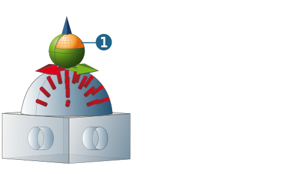

Frame limit dialog page
The Frame limit dialog page is only available via the Define frame dialog in the job list (dialog page → .
Using the frame limit, jobs with hole features may be automatically assigned to a job list ( Apply macro function). Assignment is based on the direction of the hole features used in the job that may either be defined using an angle limit from A/B and C axes or using plane normals.
Frame limit
None: The hole features may be in all directions.
Limit 3D range: Specify the permissible maximum angle range of the A/B and C axes. Here, the A/B axes correspond to the X/Y direction and the C axis corresponds to the Z direction of the selected coordinate system.
Limit by planes: Use the normals of the selected planes as limits. A graphical preview (1) shows the defined frame limit. The following applies to the Limit 3D range option:
Yellow: All jobs with a hole feature direction within the area marked in yellow will be merged into the corresponding joblist.
Green: All jobs with a hole feature direction within the area marked in green will be merged into an additionally created joblist.
|  |
The following example describes application of the Frame limit function.
Application
All holes with directions within the defined angle limit are to be merged into a single job list.
Procedure
-
Create the corresponding joblists and define the Frame limit necessary for the respective NC system by specifying a permissible maximum angle range for the rotation axes (see description above).
-
Use the Feature Mapping function. Enable the Use Generic Hole Only function to do so. hyperMILL creates a list of Generic Holes which correspond to the defined mapping conditions.
-
Then select all Generic Holes with the same diameter and select the Apply macro function from the shortcut menu.
-
In the macro database, select the job list with the required frame limit, enable the Check frame option and click Apply.
Result
All jobs whose feature orientation lies within the defined maximum angle range will be included in the selected joblist.
A new joblist will be created for all jobs whose feature orientation lies outside the defined frame limit.